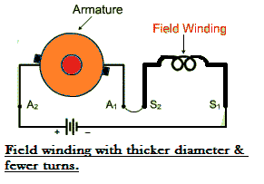
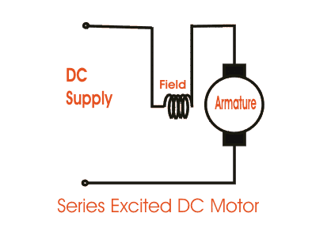
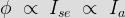
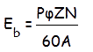
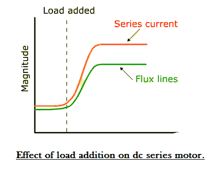

A series wound dc motor like in the case of shunt wound dc motor or compound wound dc motor falls under the category of self-excited dc motors, and it gets its name from the fact that the field winding in this case is connected internally in series to the armature winding. Thus the field winding are exposed to the entire armature electric current unlike in the case of a shunt motor.
Construction of Series DC Motor
Construction wise a this motor is similar to any other types of dc motors in almost all aspects. It consists of all the fundamental components like the stator housing the field winding or the rotor carrying the armature conductors, and the other vital parts like the commutator or the brush segments all attached in the proper sequence as in the case of a generic DC motor.
Yet if we are to take a close look into the wiring of the field and armature coils of this dc motor, its clearly distinguishable from the other members of this type. To understand that let us revert back into the above mentioned basic fact, that the this motor has field coil connected in series to the armature winding. For this reason relatively higher electric current flows through the field coils, and its designed accordingly as mentioned below.
i) The field coils of dc series motor are wound with relatively fewer turns as the electric current through the field is its armature electric current and hence for required mmf less numbers of turns are required.

ii) The wire is heavier, as the diameter is considerable increased to provide minimum electrical resistance to the flow of full armature current.
In spite of the above mentioned differences, about having fewer coil turns the running of this dc motor remains unaffected, as the electric current through the field is reasonably high to produce a field strong enough for generating the required amount of torque. To understand that better lets look into the voltage and electric current equation of dc series motor.
Voltage and Current Equation of Series DC Motor
The electrical layout of a typical series wound dc motor is shown in the diagram below.

Let the supply voltage and electric current given to the electrical port of the motor be given by E and Itotal respectively.
Since the entire supply electric current flows through both the armature and field conductor.
Where Ise is the series electric current in the field coil and Ia is the armature current.
Now form the basic voltage equation of the dc motor.
Where Eb is the back emf.
Rse is the series coil resistance & Ra is the armature resistance.
Since Ise = Ia, we can write,
")
This is the basic voltage equation of a series wound dc motor.
Another interesting fact about the dc series motor worth noting is that, the field flux like in the case of any other dc motor is proportional to field current.
But since here Ise = Ia = Itotal

i.e. the field flux is proportional to the entire armature electric current or the total supply current. And for this reason, the flux produced in this motor is strong enough to produce sufficient torque, even with the bare minimum number of turns it has in the field coil.
Speed & Torque of Series DC Motor
A series wound motors has linear relationship existing between the field electric current and the amount of torque produced. i.e. torque is directly proportional to electric current over the entire range of the graph. As in this case relatively higher electric current flows through the heavy series field winding with thicker diameter, the electromagnetic torque produced here is much higher than normal. This high electromagnetic torque produces motor speed, strong enough to lift heavy load overcoming its initial inertial of rest. And for this particular reason the motor becomes extremely essential as starter motors for most industrial applications dealing in heavy mechanical load like huge cranes or large metal chunks etc. Series motors are generally operated for a very small duration, about only a few seconds, just for the purpose of starting. Because if its run for too long, the high series electric current might burn out the series field coils thus leaving the motor useless.
Speed Regulation of Series Wound DC Motor
Unlike in the case of a DC shunt motor, the dc series motor has very poor speed regulation. i.e. the series motor is unable to maintain its speed on addition of external load to the shaft. Let us see why?
When mechanical load is added to the shaft at any instance, the speed automatically reduces whatever be the type of motor. But the term speed regulation refers to the ability of the motor to bring back the reduced speed to its original previous value within reasonable amount of time. But this motor is highly incapable of doing that as with reduction in speed N on addition of load, the back emf given by,


Also reduces as Eb ∝ N
This decrease in back Emf Eb , increases the net voltage E- Eb, and consequently the series field electric current increases,
The value of series electric current through the field coil becomes so high that it tends to saturate of the magnetic core of the field. As a result the magnetic flux linking the coils increases at a much slower rate compared to the increase in electric current beyond the saturation region as shown in the figure below.
The weak magnetic field produced as a consequence is unable to provide for the necessary amount of force to bring back the speed at its previous value before application of load.
So keeping all the above mentioned facts in mind, a series wound dc motor is most applicable as a starting motor for industrial applications.
 by
by